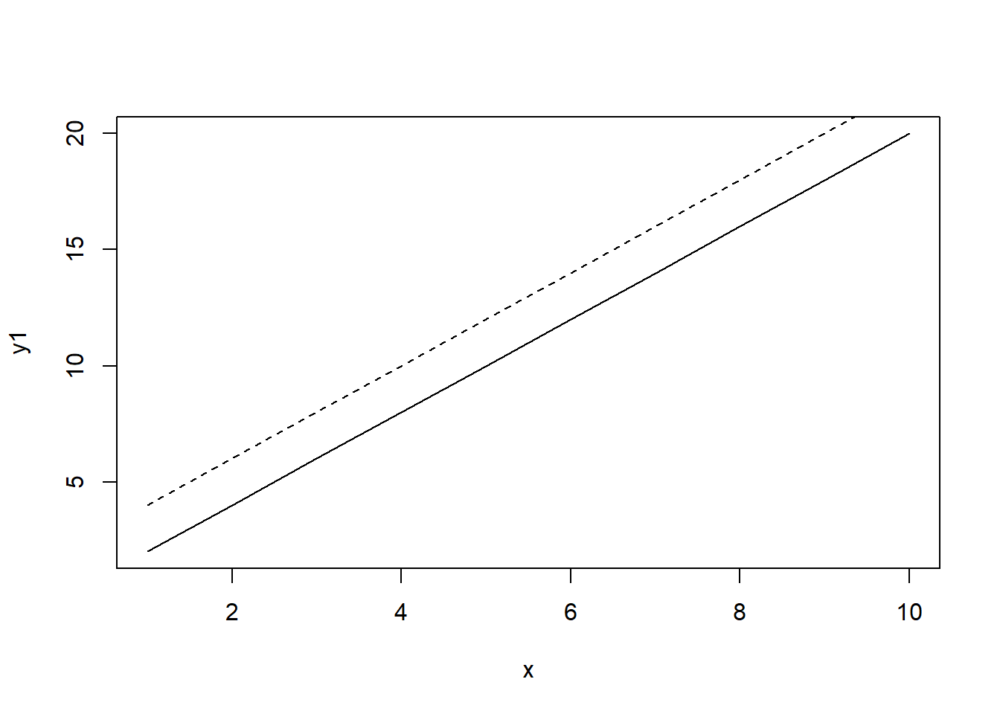
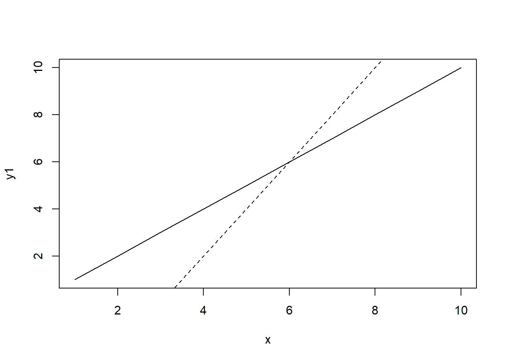
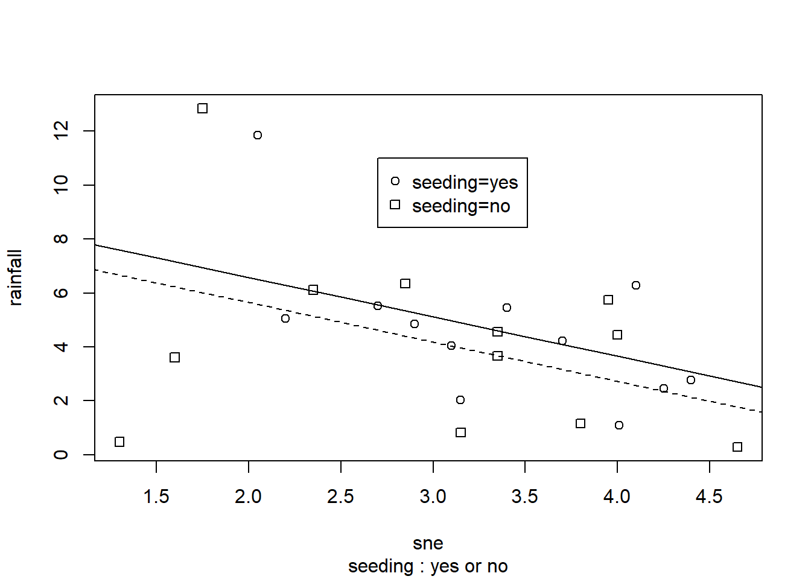
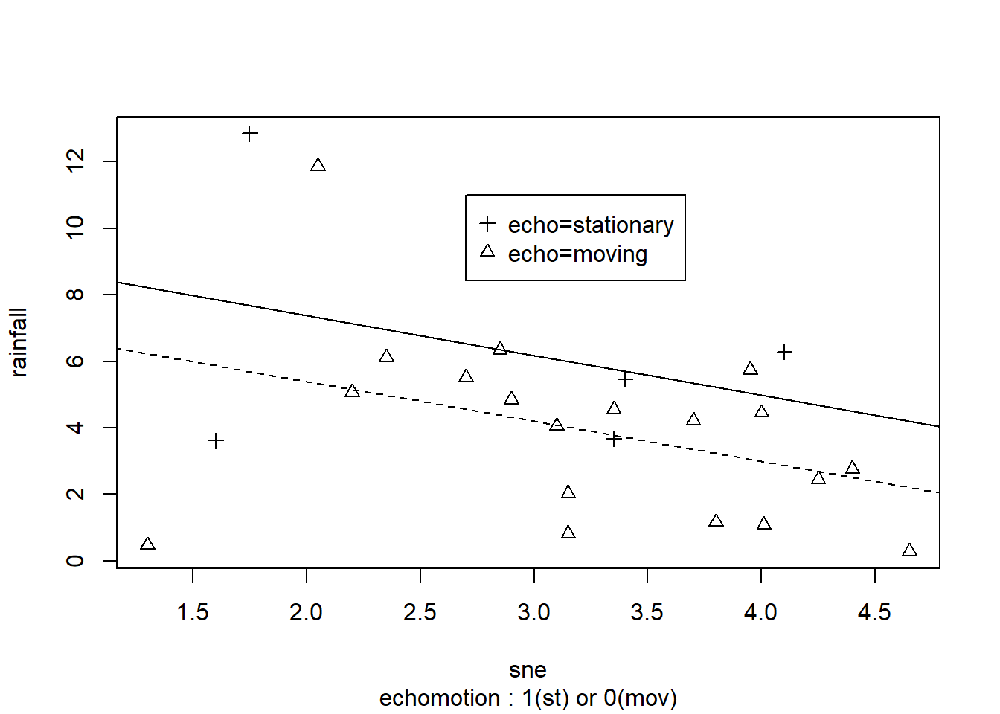
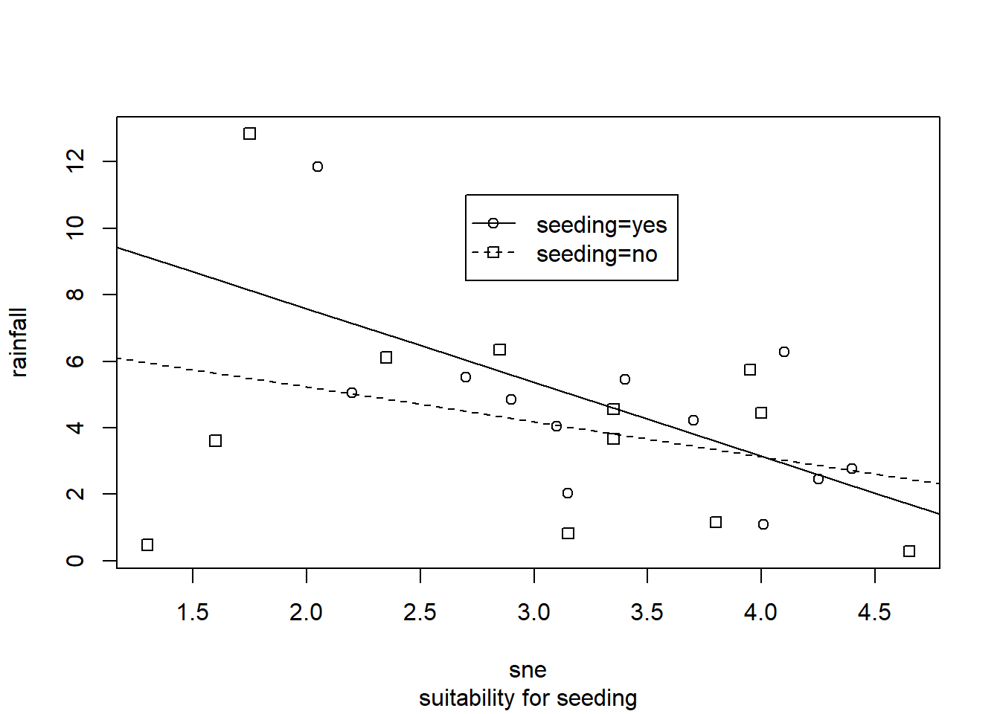
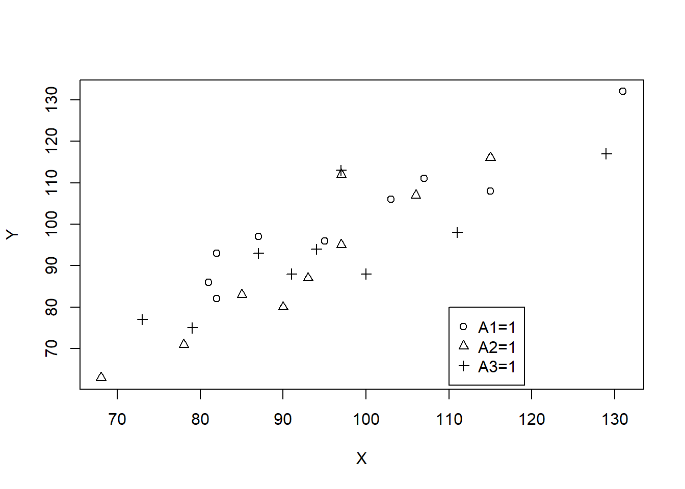
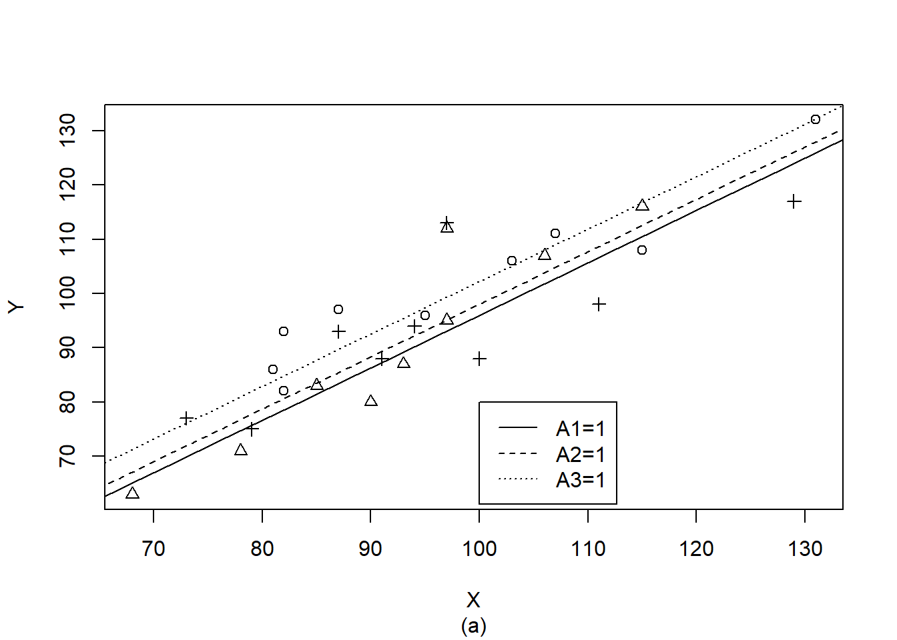

x <- 1:10
y1 <- 2*x
y2 <- 2*x+2
plot(x,y1, type="l")
lines(x,y2, lty=2)
\[ Y=\beta_0+\beta_1A+\beta_2X+\epsilon \]
여기서 \(A=\{0,1\}\)인 이분 붐주형 변수이고 \(X\)는 연속형 설명변수임
모형을 다시 포현하면
\[ Y=\begin{cases} \beta_0+\beta_2X+\epsilon, \,\,\, A=0 \\ \beta_0+\beta_1+\beta_2X+\epsilon, \,\,\, A=1 \end{cases} \]
\[ E(Y)=\begin{cases} \beta_0+\beta_2X, \,\,\, A=0 \\ \beta_0+\beta_1+\beta_2X, \,\,\, A=1 \end{cases} \]
예를 들어 \(A=0\)이 남자, \(A=1\)이 여자인 경우라면 두 개 회귀직선의 절편의 차는 남녀 간의 차이를 의미함
기본적으로 위의 회귀모형은 범주가 다르더라도 설명변수 \(X\)에 대한 회귀계수를 같이 추정하고자 할때 의미있는 모형임
범주에 따라 설명변수 \(X\)에 대한 회귀계수도 변한다면 교호작용 항을 포함한 회귀모형을 활용
\[ Y=\beta_0 +\beta_1A +\beta_2X + \beta_{12}AX+\epsilon \]
\[ Y=\begin{cases} \beta_0+\beta_2X+\epsilon, \,\,\, A=0 \\ \beta_0+\beta_1+(\beta_2+\beta_{12})X+\epsilon, \,\,\, A=1 \end{cases} \]
여기서 \(\beta_{12}\)는 범주에 따른 \(X\)에 대한 회귀계수의 변화량을 의미함
반응함수
\[ E(Y)=\begin{cases} \beta_0+\beta_2X, \,\,\, A=0 \\ \beta_0+\beta_1+(\beta_2+\beta_{12})X, \,\,\, A=1 \end{cases} \]
x <- 1:10
y1 <- 2*x
y2 <- 2*x+2
plot(x,y1, type="l")
lines(x,y2, lty=2)
x <- 1:10
y1 <- 1*x
y2 <- 2*x-6
plot(x,y1, type="l")
lines(x,y2, lty=2)
\[ \begin{cases} Y_m=\beta_{0m}+\beta_{1m}X+\epsilon, \,\,\, Male \\ Y_f=\beta_{0f}+\beta_{1f}X+\epsilon, \,\,\, Female \end{cases} \]
남녀별 회귀직선의 동일성 여부에 대한 검정을 하여 그룹별 특성과 차이에 대한 정보를 얻을 수 있음
만약 동일성을 만족한다면 그룹의 구별이 유의하지 않으므로 그룹별 데이터를 통합할 수 있음
만약 동일성을 만족하지 않는다면 그룹별 관계식이 다르므로 그룹별 회귀식을 구하고 각 그룹에 대한 특성을 파악해야 함
두 회귀직선의 평행성 검정, 즉 두 직선의 기울기에 대한 검정
귀무가설
\[ H_0:\beta_{1m}=\beta_{1f} \]
\(H_1:\beta_{1m}>\beta_{1f}\)
\(H_1:\beta_{1m}<\beta_{1f}\)
\(H_1:\beta_{1m}\ne \beta_{1f}\)
\[ T=\frac{\hat{\beta}_{1m}-\hat{\beta}_{1f}}{S_{\hat{\beta}_{1m}-\hat{\beta}_{1f}}} \]
\[ Y=\beta_0+\beta_1X+\beta_2Z+\beta_3XZ+\epsilon \]
\[ E(Y)=\begin{cases} \beta_0+\beta_1X+\epsilon, \,\,\, Z=0 \\ (\beta_0+\beta_2)+(\beta_1+\beta_3)X+\epsilon, \,\,\, Z=1 \end{cases} \]
\[ H_0: \beta_3=0 \]
\(t\)-검정 또는 부분 \(F\)-검정을 통해 가설검정을 할 수 있음
대립가설
\(H_1:\beta_3>0\)
\(H_1:\beta_3<0\)
\(H_1:\beta_3 \ne 0\)
\[ T=\frac{\hat{\beta}_3}{S_{\hat{\beta}_3}} \]
\[ F(XZ|X,Z)=\frac{RSS(X,Z,XZ)-RSS(X,Z)}{MSE(X,Z,XZ)}\sim F_{1,n_m+n_f-4} \]
\[ F \ge F_{1,n_m+n_f-4}(\alpha) \text{ then reject } H_0 \] - 여기서 \(SS(X,Z)\)는 설명변수 \(X\)와 \(Z\)로 설명되는 제곱합, \(RSS(X,Z)\)은 설명변수 \(X\)와 \(Z\)로 설명된 후의 잔차제곱합
\[ H_0:\beta_{0m}=\beta_{0f}=\beta_0 \,\,\, \&\,\,\, \beta_{1m}=\beta_{1f}=\beta_1 \,\,\, vs. \,\,\, H_1: not \,\,\, H_0 \]
\[ F(XZ|X,Z)=\frac{(RSS(X,Z,XZ)-RSS(X,Z))/2}{MSE(X,Z,XZ)}\sim F_{2,n_m+n_f-4} \]
\[ F \ge F_{2,n_m+n_f-4}(\alpha) \text{ then reject } H_0 \]
모형비교를 통해 두 회귀직선의 일치성 여부에 대한 검정을 할 수 있음
두 회귀직선이 일치할 경우 \(Y=\beta_0+\beta_1X+\beta_2Z+\beta_3XZ+\epsilon\)과 \(Y=\beta_0+\beta_1X+\epsilon\)이 같게 되므로 이들 모형에 대한 부분 \(F\)-검정을 수행함
\[ F(XZ,Z|X)=\frac{(RSS(X,Z,XZ)-RSS(X))/2}{MSE(X,Z,XZ)}\sim F_{2,n_m+n_f-4} \]
\[ F \ge F_{2,n_m+n_f-4}(\alpha) \text{ then reject } H_0 \]
\[ Y=\beta_0+\beta_1A_1+\beta_2A_2+\beta_3A_3+\gamma X+\epsilon \]
여기서 \(A_1=\{0,1\}\), \(A_2=\{0,1\}\), \(A_3=\{0,1\}\)인 이분 범주형 변수이고 \(X\)는 연속형 설명변수
예를 들어, 6개체에 대해 \(\mathbf{X}\) 행렬이 다음과 같을 때, 즉 \(A=\{1, 2, 3\}\) 3개의 값을 가질 때
\[ \mathbf{Y}=\begin{pmatrix} Y_1\\ Y_2\\ Y_3\\ Y_4\\ Y_5\\ Y_6 \end{pmatrix}, \,\,\, \mathbf{X}=\begin{pmatrix} 1&1&0&0&X_1\\ 1&1&0&0&X_2\\ 1&0&1&0&X_3\\ 1&0&1&0&X_4\\ 1&0&0&1&X_5\\ 1&0&0&1&X_6 \end{pmatrix}, \,\,\, \beta=\begin{pmatrix} \beta_0\\ \beta_1\\ \beta_2\\ \beta_3\\ \gamma \end{pmatrix} \]
최소제곱추정량 \(\hat{\beta}=(\mathbf{X}'\mathbf{X})^{-1}\mathbf{X}'\mathbf{Y}\) 계산에서 \(A_1\)열+\(A_2\)열+\(A_3\)열=첫 번째 열이므로 열간 완전한 종속관계가 존재하고, \(\mathbf{X}'\mathbf{X}\)는 정칙행렬이 아니므로 최소제곱추정량을 구할 수 없게 됨
이러한 문제를 해결하기 위하여 \(A_3\)를 \(A_1\)과 \(A_2\)를 사용하여 표현하여 \(\mathbf{X}\) 행렬이 정칙행렬이 되도록 함
위 모형은 \(A_1=A_2=0\)인 경우 \(A_3\)로 표현할 수 있으므로
\[ Y=\beta_0+\beta_1A_1+\beta_2A_2+\gamma X +\epsilon \]
\[ \mathbf{X}=\begin{pmatrix} 1&1&0&0&X_1\\ 1&1&0&0&X_2\\ 1&0&1&0&X_3\\ 1&0&1&0&X_4\\ 1&0&0&0&X_5\\ 1&0&0&0&X_6 \end{pmatrix} \]
\[ E(Y)=\begin{cases} \beta_0+\beta_1+\gamma X, \,\,\, A=1 \\ \beta_0+\beta_2+\gamma X, \,\,\, A=2 \\ \beta_0+\gamma X, A=3 \end{cases} \]
이 경우는 설명변수 \(X\)에 대해 같은 기울기를 가진 경우이며 반응함수들의 차이는 절편의 차이로 나타남
설명변수 \(\mathbf{X}\)에 대해 기울기가 같다고 할 수 없다면 다음과 같이 교호작용 항을 포함한 모형을 고려해야 함
\[ Y=\beta_0+\beta_1A_1+\beta_2A_2+\gamma X + \beta_3A_1X + \beta_4A_2X+\epsilon \]
\[ E(Y)=\begin{cases} \beta_0+\beta_1+(\gamma+\beta_3) X, \,\,\, A=1 \\ \beta_0+\beta_2+(\gamma+\beta_4) X, \,\,\, A=2 \\ \beta_0+\gamma X, A=3 \end{cases} \] - 이와 같이 일반적으로 \(q\)개의 질적(qualitative) 변수가 있을 경우에는 \(q-1\)개의 가변수를 사용하여 표현하면 최소제곱추정량을 구할 수 있음
seeding: 구름에 씨앗을 준 여부(yes, no)
time: 실험 첫날 이후 비온 날(1975년 6월 16일=0)
sne: 구름 씨앗 주기에 대한 적정성(suitability criterion)
cloudcover: 실험 지역의 구름 퍼센트
prewetness: \(10^7 m^3\) 면적당 구름씨앗을 주기 전 강수량
echomotion: 구름 종류(stationary, moving)
rainfall: 일정 시간 후 강수량
library(HSAUR)
clouds seeding time sne cloudcover prewetness echomotion rainfall
1 no 0 1.75 13.4 0.274 stationary 12.85
2 yes 1 2.70 37.9 1.267 moving 5.52
3 yes 3 4.10 3.9 0.198 stationary 6.29
4 no 4 2.35 5.3 0.526 moving 6.11
5 yes 6 4.25 7.1 0.250 moving 2.45
6 no 9 1.60 6.9 0.018 stationary 3.61
7 no 18 1.30 4.6 0.307 moving 0.47
8 no 25 3.35 4.9 0.194 moving 4.56
9 no 27 2.85 12.1 0.751 moving 6.35
10 yes 28 2.20 5.2 0.084 moving 5.06
11 yes 29 4.40 4.1 0.236 moving 2.76
12 yes 32 3.10 2.8 0.214 moving 4.05
13 no 33 3.95 6.8 0.796 moving 5.74
14 yes 35 2.90 3.0 0.124 moving 4.84
15 yes 38 2.05 7.0 0.144 moving 11.86
16 no 39 4.00 11.3 0.398 moving 4.45
17 no 53 3.35 4.2 0.237 stationary 3.66
18 yes 55 3.70 3.3 0.960 moving 4.22
19 no 56 3.80 2.2 0.230 moving 1.16
20 yes 59 3.40 6.5 0.142 stationary 5.45
21 yes 65 3.15 3.1 0.073 moving 2.02
22 no 68 3.15 2.6 0.136 moving 0.82
23 yes 82 4.01 8.3 0.123 moving 1.09
24 no 83 4.65 7.4 0.168 moving 0.28library(HSAUR)
data("clouds", package = "HSAUR")
attach(clouds)
seeding<-as.numeric(clouds$seeding)-1 # yes=1 no=0 가변수 생성
echomotion<-as.numeric(clouds$echomotion)-1 # stationary=1 moving=0
ra<- lm(rainfall~ seeding + sne ) # 가변수 seeding 포함
summary(ra)
Call:
lm(formula = rainfall ~ seeding + sne)
Residuals:
Min 1Q Median 3Q Max
-6.1965 -1.5845 -0.1729 1.1643 6.8406
Coefficients:
Estimate Std. Error t value Pr(>|t|)
(Intercept) 8.5651 2.1835 3.923 0.000782 ***
seeding 0.9323 1.2151 0.767 0.451470
sne -1.4604 0.6692 -2.182 0.040586 *
---
Signif. codes: 0 '***' 0.001 '**' 0.01 '*' 0.05 '.' 0.1 ' ' 1
Residual standard error: 2.929 on 21 degrees of freedom
Multiple R-squared: 0.1896, Adjusted R-squared: 0.1124
F-statistic: 2.456 on 2 and 21 DF, p-value: 0.11grid<-seq(1,5, by=0.5)
seed1<- ra$coefficients[[1]]+ra$coefficients[[2]] +ra$coefficients[[3]]*grid
seed0<- ra$coefficients[[1]]+ra$coefficients[[3]]*grid
plot(sne, rainfall, pch=seeding, sub="seeding : yes or no") #그림 9.2(a)
legend(2.7,11, c("seeding=yes" ,"seeding=no"), pch=c(1,0))
lines(grid, seed1, lty=1)
lines(grid, seed0, lty=2)
ra<- lm(rainfall~ echomotion + sne ) # 가변수 echomotion 포함
summary(ra)
Call:
lm(formula = rainfall ~ echomotion + sne)
Residuals:
Min 1Q Median 3Q Max
-5.7698 -1.9424 0.1154 1.2097 6.5233
Coefficients:
Estimate Std. Error t value Pr(>|t|)
(Intercept) 7.8052 2.2190 3.517 0.00205 **
echomotion 1.9866 1.4561 1.364 0.18692
sne -1.2042 0.6514 -1.849 0.07864 .
---
Signif. codes: 0 '***' 0.001 '**' 0.01 '*' 0.05 '.' 0.1 ' ' 1
Residual standard error: 2.847 on 21 degrees of freedom
Multiple R-squared: 0.2347, Adjusted R-squared: 0.1618
F-statistic: 3.22 on 2 and 21 DF, p-value: 0.0603grid<-seq(1,5, by=0.5)
echo1<- ra$coefficients[[1]]+ra$coefficients[[2]] +ra$coefficients[[3]]*grid
echo0<- ra$coefficients[[1]]+ra$coefficients[[3]]*grid
plot(sne,rainfall, pch=as.numeric(echomotion)+2, sub="echomotion : 1(st) or 0(mov)")
legend(2.7,11, c("echo=stationary", "echo=moving"), pch=c(3,2))
lines(grid, echo1, lty=1)
lines(grid, echo0, lty=2)
ra <- lm(rainfall~ seeding + sne + seeding:sne)
summary(ra)
Call:
lm(formula = rainfall ~ seeding + sne + seeding:sne)
Residuals:
Min 1Q Median 3Q Max
-5.4892 -2.0471 -0.1489 1.2661 7.3616
Coefficients:
Estimate Std. Error t value Pr(>|t|)
(Intercept) 7.3195 2.6622 2.749 0.0124 *
seeding 4.7007 4.6985 1.000 0.3290
sne -1.0464 0.8384 -1.248 0.2264
seeding:sne -1.1717 1.4104 -0.831 0.4159
---
Signif. codes: 0 '***' 0.001 '**' 0.01 '*' 0.05 '.' 0.1 ' ' 1
Residual standard error: 2.951 on 20 degrees of freedom
Multiple R-squared: 0.2166, Adjusted R-squared: 0.09909
F-statistic: 1.843 on 3 and 20 DF, p-value: 0.1718grid<-seq(1,5, by=0.5)
seed1<-ra$coefficients[[1]]+ra$coefficients[[2]]+ra$coefficients[[3]]*grid+ra$coefficients[[4]]*grid
seed0<- ra$coefficients[[1]]+ra$coefficients[[3]]*grid
plot(sne, rainfall, pch=as.numeric(seeding), sub="suitability for seeding")
legend(2.7,11, c("seeding=yes" ,"seeding=no"), pch=c(1,0), lty=c(1,2))
lines(grid, seed1, lty=1)
lines(grid, seed0, lty=2)
Y: 보육기관에서 자란 쌍둥이 IQ
X: 친부모가 키운 쌍둥이 IQ
\(A_1=1\): 친부모의 생활수준=높음
\(A_2=1\): 친부모의 생활수준=중간
\(A_3=1\): 친부모의 생활수준=낮음
load("dataset/twin.rda")
twin number Y X A1 A2 A3
1 1 82 82 1 0 0
2 2 80 90 1 0 0
3 3 88 91 1 0 0
4 4 108 115 1 0 0
5 5 116 115 1 0 0
6 6 117 129 1 0 0
7 7 132 131 1 0 0
8 8 71 78 0 1 0
9 9 75 79 0 1 0
10 10 93 82 0 1 0
11 11 95 97 0 1 0
12 12 88 100 0 1 0
13 13 111 107 0 1 0
14 14 63 68 0 0 1
15 15 77 73 0 0 1
16 16 86 81 0 0 1
17 17 83 85 0 0 1
18 18 93 87 0 0 1
19 19 97 87 0 0 1
20 20 87 93 0 0 1
21 21 94 94 0 0 1
22 22 96 95 0 0 1
23 23 112 97 0 0 1
24 24 113 97 0 0 1
25 25 106 103 0 0 1
26 26 107 106 0 0 1
27 27 98 111 0 0 1attach(twin)
plot(X,Y, pch=c(1,2,3))
legend(110,80, c("A1=1" ,"A2=1", "A3=1"), pch=c(1,2,3))
a<-lm(Y~A1+A2+X)
summary(a)
Call:
lm(formula = Y ~ A1 + A2 + X)
Residuals:
Min 1Q Median 3Q Max
-14.8235 -5.2366 -0.1111 4.4755 13.6978
Coefficients:
Estimate Std. Error t value Pr(>|t|)
(Intercept) 5.6188 9.9628 0.564 0.578
A1 -6.2264 3.9171 -1.590 0.126
A2 -4.1911 3.6951 -1.134 0.268
X 0.9658 0.1069 9.031 5.05e-09 ***
---
Signif. codes: 0 '***' 0.001 '**' 0.01 '*' 0.05 '.' 0.1 ' ' 1
Residual standard error: 7.571 on 23 degrees of freedom
Multiple R-squared: 0.8039, Adjusted R-squared: 0.7784
F-statistic: 31.44 on 3 and 23 DF, p-value: 2.604e-08 anova(a)Analysis of Variance Table
Response: Y
Df Sum Sq Mean Sq F value Pr(>F)
A1 1 631.5 631.5 11.0165 0.002989 **
A2 1 100.1 100.1 1.7456 0.199428
X 1 4674.7 4674.7 81.5521 5.047e-09 ***
Residuals 23 1318.4 57.3
---
Signif. codes: 0 '***' 0.001 '**' 0.01 '*' 0.05 '.' 0.1 ' ' 1grid<-seq(60,140, by=4)
a1<-a$coefficients[[1]]+a$coefficients[[2]]+a$coefficients[[4]]*grid
a2<-a$coefficients[[1]]+a$coefficients[[3]]+a$coefficients[[4]]*grid
a3<-a$coefficients[[1]]+a$coefficients[[4]]*grid
plot(X,Y, pch=c(1,2,3), sub="(a)")
legend(100,80, c("A1=1" ,"A2=1", "A3=1"), lty=c(1,2,3))
lines(grid, a1, lty=1)
lines(grid, a2, lty=2)
lines(grid, a3, lty=3)
b<-lm(Y~A1+A2+X + A1:X + A2:X)
summary(b)
Call:
lm(formula = Y ~ A1 + A2 + X + A1:X + A2:X)
Residuals:
Min 1Q Median 3Q Max
-14.479 -5.248 -0.155 4.582 13.798
Coefficients:
Estimate Std. Error t value Pr(>|t|)
(Intercept) 7.20461 16.75126 0.430 0.672
A1 -9.07665 24.44870 -0.371 0.714
A2 -6.38859 31.02087 -0.206 0.839
X 0.94842 0.18218 5.206 3.69e-05 ***
A1:X 0.02914 0.24458 0.119 0.906
A2:X 0.02414 0.33933 0.071 0.944
---
Signif. codes: 0 '***' 0.001 '**' 0.01 '*' 0.05 '.' 0.1 ' ' 1
Residual standard error: 7.921 on 21 degrees of freedom
Multiple R-squared: 0.8041, Adjusted R-squared: 0.7574
F-statistic: 17.24 on 5 and 21 DF, p-value: 8.31e-07 anova(b)Analysis of Variance Table
Response: Y
Df Sum Sq Mean Sq F value Pr(>F)
A1 1 631.5 631.5 10.0657 0.004585 **
A2 1 100.1 100.1 1.5949 0.220469
X 1 4674.7 4674.7 74.5132 2.382e-08 ***
A1:X 1 0.6 0.6 0.0098 0.922121
A2:X 1 0.3 0.3 0.0051 0.943948
Residuals 21 1317.5 62.7
---
Signif. codes: 0 '***' 0.001 '**' 0.01 '*' 0.05 '.' 0.1 ' ' 1grid<-seq(60,140, by=4)
b1<-coef(b)[[1]]+coef(b)[[2]]+(coef(b)[[5]]+coef(b)[[4]])*grid
b2<-coef(b)[[1]]+coef(b)[[3]]+(coef(b)[[6]]+coef(b)[[4]])*grid
b3<-coef(b)[[1]]+coef(b)[[4]]*grid
plot(X,Y, pch=c(1,2,3), sub="(b)")
legend(100,80, c("A1=1" ,"A2=1", "A3=1"), lty=c(1,2,3))
lines(grid, b1, lty=1)
lines(grid, b2, lty=2)
lines(grid, b3, lty=3)